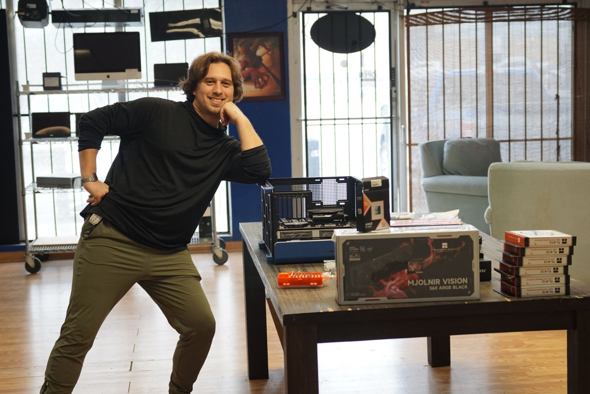
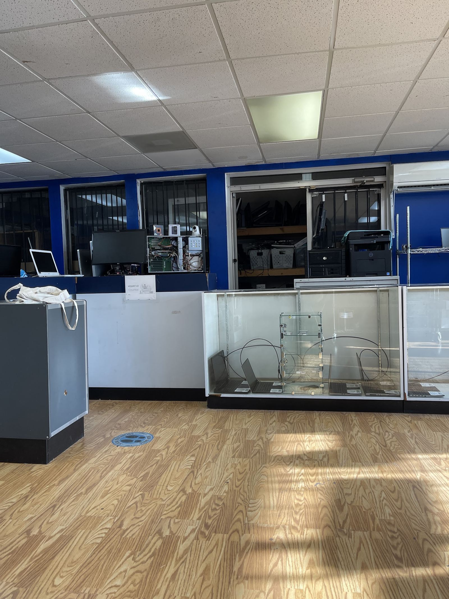
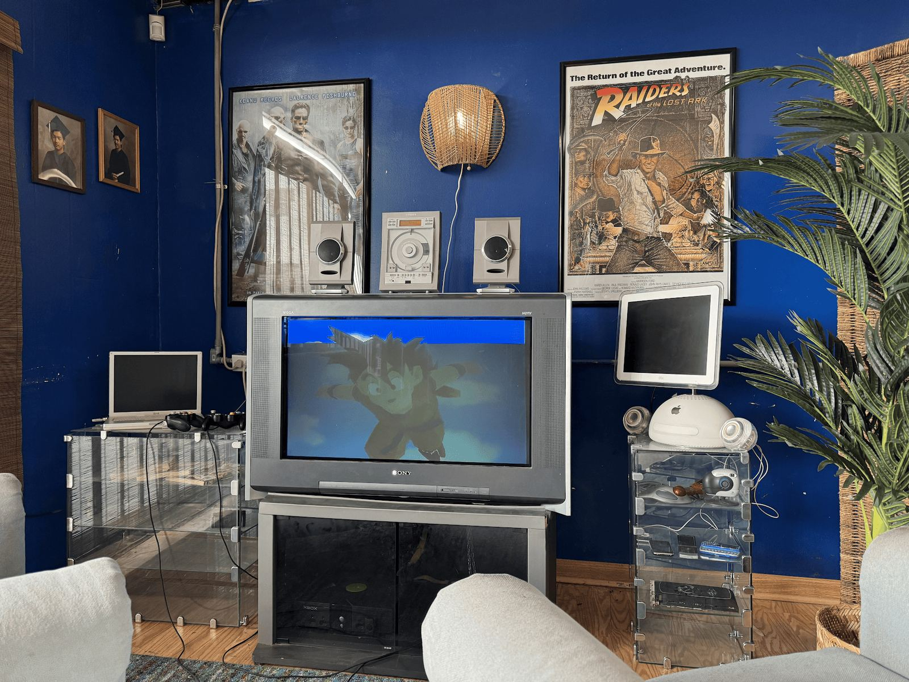
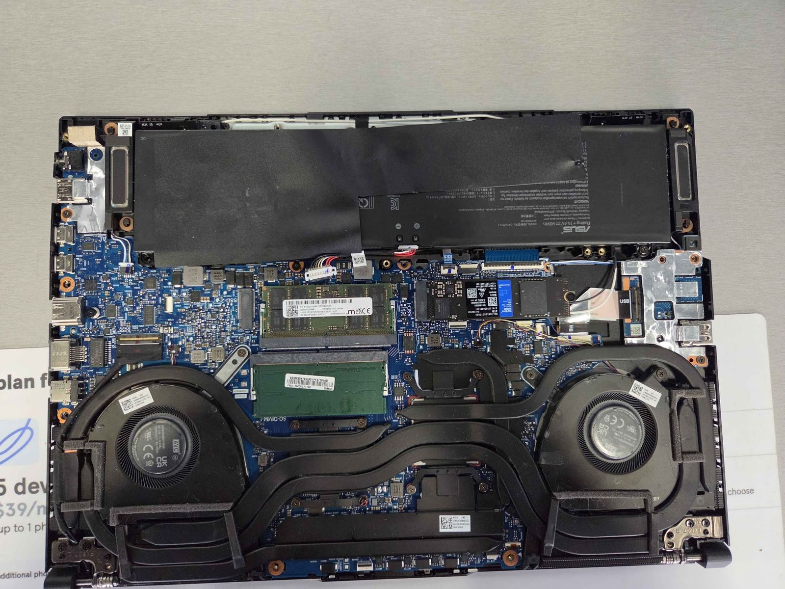
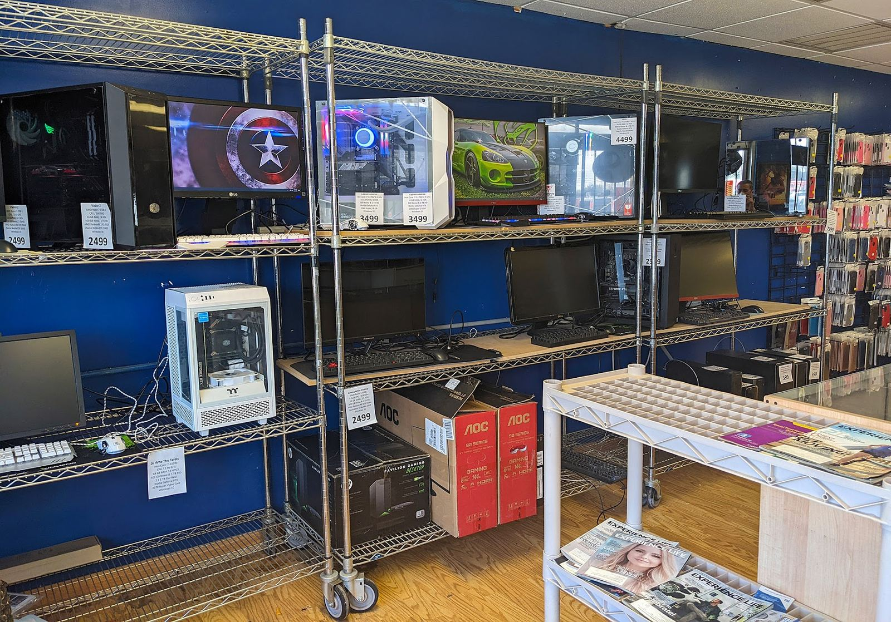
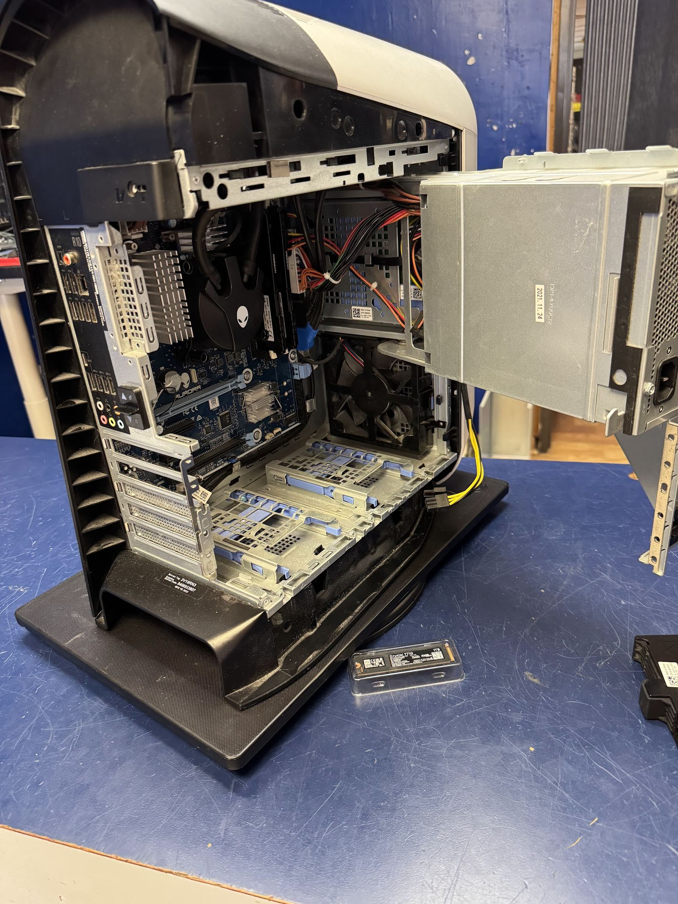
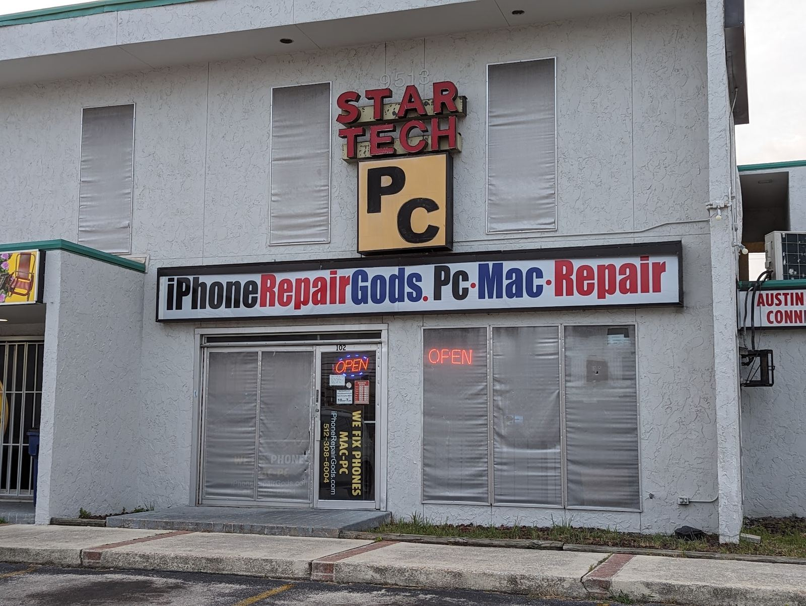

Phone and computer repair
on Burnet Road.
Cell phones, computers, Macs, tablets and gaming consoles. Fast service, usually same day — and on iPhones, usually less than an hour. Please come see us.
Just went in to get my frozen phone fixed and within five minutes the tech showed me how to do a special kind of restart. No charge! Works perfectly! These guys are great!
a month ago on Google
My son saved all his allowance and Christmas money to build a new gaming PC to go along with his new graphics card. Tanner was really awesome to work with. …Read the full review from Jon M
9 months ago on Google
Long time customer been coming here for 20 years — always computers, cell phone repair here. Or if I need helpful information they were always happy to help me.
2 years ago on Google
Wishing I could give more than a 5 star rating. These guys went well beyond any expectations to recover a misbehaving iPhone. Sam not only repaired my old phone, but was able to get all the info transferred onto my new iPhone! …Read the full review from Bonn TX
4 months ago on Google
Cracked my Pixel 7 Pro phone screen and they were one of the only places with decent reviews open on a Sunday. Very glad I came here — they had a lower quote than the “authorized Google phone repair” store, even with OEM part. …Read the full review from Veronica Yan
a year ago on Google
It took about half a day to find StarTech PC since other places on Google seemed sketchy to me. We had a spill on our gaming PC… Nico was very professional and personable. …Read the full review from Matthew Cortinas
3 months ago on Google
This is my 4th time to get my phone repaired — this time was the worst because my phone flew out the window (thanks scary bug on my leg). This place is great. …Read the full review from Kim Joy
2 years ago on Google
The staff was very kind and helpful. I got my iPhone 16’s back camera fixed. I brought it in pretty shattered and they fixed the camera perfectly! Got it done in about an hour.
5 months ago on Google
I was having trouble finishing my own personal PC build with a custom water loop, and StarTech PC did an absolutely amazing job helping me finish it. …Read the full review from Lewis Lopez
a year ago on Google
Super friendly people, I needed a few standoffs in a pinch and they let me dig through the screw cauldron to find some. I’ll definitely be back! Thanks!
9 months ago on Google
Would give 10 stars if I could. I have been several times and they are always so helpful, kind, efficient, and have great prices. Tanner has helped me each time and he is truly incredible — so knowledgeable and great to work with!
6 months ago on Google
I had an emergency and I needed my iPhone fixed asap! It would not turn on, it just shut off! Took it into the store and was fixed in less than 20 min after I told my story. GREAT SERVICE!
3 months ago on Google
Reviews on our Google listing that mention…
- 169Phone repair
- 107Computer repair
- 106iPhone repair
- 48Screen repair
How a repair works here.
- Walk in, any day. No appointment necessary. Open every day, 10 am to 7 pm.
- Straight answers. Reviewers say the staff “explained everything before starting the repairs” (Bryan H.) and were “straightforward with how their service works” (Tien T.).
- Fast service. Usually same day — and on iPhones, usually less than an hour.
- Weekends too. Open Saturday and Sunday. “Having repair service available weekends has been a lifesaver more than once” (e jerry powell).
What needs fixing?
Pick your device and the problem, then text or call the shop — or just bring it in.
Your repair
iPhone 16 series · Cracked screen
Bring it in any day and the shop will take a look. No appointment necessary.
A real storefront on Burnet Road.
Repairs, PC parts, laptops and PCs for sale, and a place to sit while you wait.






Custom gaming PCs.
Custom and prebuilt gaming PCs, laptops and office computers. Tell us your budget and what you want it for, and we’ll help you pick everything out.
“Tanner was really awesome to work with. He helped my son pick everything out to stay on budget and built most of the rig… Worth every penny!”Jon M · Google reviewRequest a custom PC
Common questions.
Do I need an appointment?
No appointment necessary. Walk in any day between 10 am and 7 pm.
How long does a repair take?
Fast service, usually same day — and on iPhones, usually less than an hour.
How much will it cost?
It depends on the device and the repair. Call (512) 719-4263 or bring it in and the shop will take a look.
Is there a warranty?
Ask at the counter about your repair. One reviewer noted their two replacement phone screens came with a warranty.
Can you move my data to a new phone?
Ask the shop. One customer’s misbehaving iPhone was repaired and Sam “was able to get all the info transferred onto my new iPhone” (Bonn TX, Google review).
Do you build gaming PCs?
Yes — custom and prebuilt gaming PCs, laptops and office computers. Tell us your budget and what you play.
Do you buy old devices?
Yes. We buy and/or recycle old PCs and other electronic devices. Bring it in or call (512) 719-4263.
Do you sell computers?
Yes. Laptops (refurbished and new), used PCs and prebuilt gaming PCs. Stock changes, so call or stop by to see what’s in.
Come see us on Burnet.
Walk‑ins welcome every day. No appointment necessary.
- Address
- 9513 Burnet Rd, Suite 102
Austin, TX 78758Look for the STAR TECH PC sign over Suite 102. - Today
- Open daily, 10 am – 7 pm
- Hours
- Every day, 10 am – 7 pm
- Phone
- (512) 719-4263 · Text us
